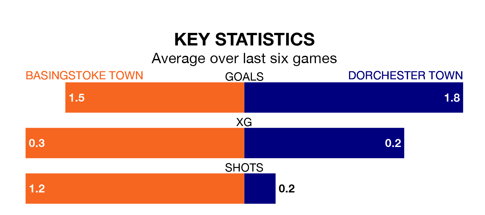

Dorchester Town come to play Basingstoke Town on Saturday in excellent form, having collected 16 points from their last six games.
The visitors have won five and drawn one of their last six fixtures, while Basingstoke have two wins and a draw.
In the last 10 years, Basingstoke and Dorchester have played each other on eight occasions. Dorchester won five of them and they drew three times.
On average, Basingstoke scored 0.9 goals and Dorchester 2.0 in those matches.
Their last meeting was on November 11, when Dorchester won 4-1 at home.
With 55 goals in 36 games so far this season, Dorchester are scoring at below the league average rate with 1.5 goals per game. And they are conceding more than average, letting in 64 goals at a rate of 1.8 per game.
Basingstoke, meanwhile, are average scorers, with 1.7 goals per game. They have conceded 2.1 goals per game.
Basingstoke Town are 12th in the table after 39 games, of which they have won 14 and drawn eight, earning 50 points.
Dorchester Town are one place ahead of the hosts in 11th, with 14 wins and eight draws putting them on the same number of points.
Basingstoke's last match was on April 13, a 3-0 loss against Swindon Supermarine.
Dorchester beat Hanwell Town 2-1 last time out, also on April 13.
Updated: 11:31 (UTC), 15/04/24